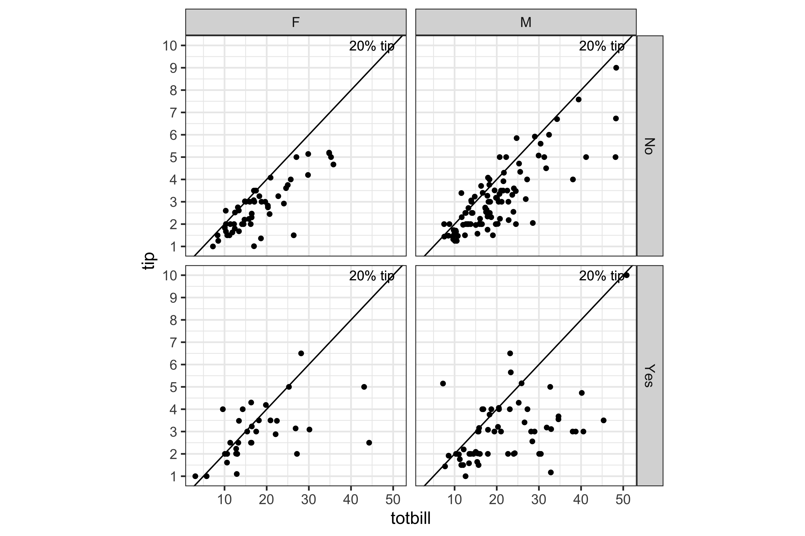

What is EDA, really?
Joe Cheng’s talk at posit::conf
I’ve been meaning to write about this for several years, but Joe Cheng’s talk at posit::conf on Aug 14, 2024, precipitated the motivation to do it now. His talk slides are at https://speakerdeck.com/jcheng5/ and the topic focuses on using AI for dashboard data analysis.
The crux of the talk is a Shiny app focused on the tips data, with a chatbot in the side bar that can change some options or answer other questions. You can play with the app at https://jcheng.shinyapps.io/sidebot/.
Where did the tips data come from?
First, I have to start with the tips data. This data is special to me. As a beginning lecturer at Iowa State University in 1993 I was given the task of teaching a data analysis (read mostly linear regression) class to business students. So I hunted around to find new data sets to use, ones other than those in “Data” by Andrews and Herzeberg which was the common go-to data source at the time.
The tips data comes from Bryant & Smith (1994) “Practical Data Analysis: Case Studies in Business Statistics”, which explained how to determine which factors affect tipping rate from data collected by one waiter at one restaurant for about three months. Tipping immediately drew my attention because being an Australian in the USA, how tipping worked was still confusing to me even after five years of participating in the practice. The case study focused solely on the regression model, but my exploration of the data revealed it had many more interesting patterns. We used this data in the introduction of Cook and Swayne (2007) to explain how exploring data differs from confirmatory analysis.
What do people think EDA is?
Today, exploratory data analysis has been conflated with descriptive statistics. If you read through the resource-rich “The Landscape of R Packages for Automated Exploratory Data Analysis” by Staniak and Biecek, you will find a comparison of numerous R packages reportedly doing EDA, but in reality only do PURELY descriptive statistics.
EDA is really this
“Exploratory data analysis” was a term coined by John W. Tukey, and marked by the publication of his book with this name in 1977. Interestingly, the attention that this effort received was not appreciated by many in the British school of data analysis, where what Tukey was doing was considered just what many of them had been doing for eons, initial data analysis in the style of Chatfield (1991). However, this was misguided – EDA is very different from IDA.
I picked up Tukey’s book in 1993, particularly after some colleagues referred to me as the new Tukey, but I could not wrap my head around the content. I was familiar with exploring high-dimensional data with interactive and dynamic graphics, finding new structures in the PRIM-9 data that were not clear that Tukey had seen, not doing pencil-and-paper calculations and plots. In truth, the problem was most likely the style of the writing, as noted in a 1979 review by Ehrenberg who says Tukey’s expository style makes it impossible to dip into. It’s a massive collection of bits and pieces and what might be done with a data set.
But the spirit of EDA is clear in the introduction. EDA is the joy of working with data with a clear demand for pictures drawn from data that force us to notice what we never expected to see. Descriptive statistics are boring and dull and extensive. EDA is anything but that – it is exciting and dizzying and thoughtful.
Slides 19-53 from week 1 of my unit at Monash University ETC5521 illustrate the difference between confirmatory and exploratory data analysis using the tips data. All of the really interesting aspects of this data are found from the exploratory data plots, not from the confirmatory analysis.

smoking=Yes.Where does AI fall down on EDA?
Data analysis trends have a cyclical or maybe spiraling nature. Tukey’s EDA was a reaction against the modern obsession with statistical inference. The development of statistical inference architecture was a reaction to informal data analysis, that evolved it into a more organised state. Tukey wanted us not to forget that informal methods could reveal things that were missed by the blinkered constraints of the formal process of statistical inference. Complex machine learning models like neural networks are in reaction to the inability of statistical models to capture highly non-linear relationships, and it returns to a data-centric perspective. AI doesn’t quite fit this data analysis cycle, because it is more related to managing the vast quantities of information stored about our world, and improving the human interface to this information. It should be noted that Tukey was also at the forefront of developing computational methods, that today enable statistical inference to be conducted on complex data and models.
The current state of AI for data analysis leaves most of the interesting findings behind the door. The human language interface is definitely better though: as Joe’s chatbot confirms one can ask the question in plain English (hopefully other languages as well), without the labour of turning it into an SQL query or a computer-interpretable line of code.
The packages listed in Staniak and Biecek’s article, summarytools, SmartEDA and DataExplorer remove some of the hard work of data analyis, by automatically making extensive numerical and graphical summaries of the columns (hopefully variables) in the data. However, the difficulty in automating this can be seen by the poor quality of graphics, choices of what binwidth for the histograms, long axis labels, poor choices in type of plot and aspect ratio of plots, … There is still hope that this might be improved, especially with the clarity provided by the tidy data principles and the grammar of graphics for plot specification. This helps in handling variable type from a computational perspective, but still misses the statistical perspective (e.g. response vs independent), and it is still hard to decide on appropriate axis scales and aspect ratio, and even real estate on a page needed for reading a plot.
But, let’s move on and play with Joe’s dashboard on the tips data, to see whether the interesting details of the data can be divulged. The choice of items in the dashboard are three summary numbers, a full spreadsheet of the data, a scatterplot, and a ridge plot. None of these shows anything interesting. To find the interesting patterns, one needs to: (1) be able to use different binwidths on any histogram or density display, (2) examine subsets by conditioning on the categorical variables.
Nevertheless, the chatbot’s first message is:
You can use this sidebar to filter and sort the data based on the columns available in the tips table.
and it suggests a few possibilities, all of which when asked will change the data shown in the dashboard, but nothing interesting in the data emerges.
So let’s ask:
- Is there anything interesting in this data?
I don’t have direct access to visualize or browse the data myself…
That was wishful thinking, like the student who dumped my first assignment fully into the AI system hoping for an easy solution. So let’s try something where I know there should be an interesting pattern revealed.
- Would you facet by smoker and sex?
Since you want to facet, I will filter the dashboard to show all columns but segregate the data based on these categorical values.
and it shows the SQL query string, but doesn’t re-do the summaries for these subsets. That’s a human issue, because the dashboard has not been designed to enable this type of user choice.
We can ask this more generally with
- Is the relationship between tip and total bill different for by smoking and sex?
Let’s calculate the correlation coefficient between tip and total_bill for each combination of smoker status and sex.
which makes a nice summary of the conditional correlations and does show much lower correlation for the smoking parties. Let’s go for another question where I know the answer should reveal something interesting about tipping behaviour:
- Is there some piling of tips at certain values?
Specifically, we can count the frequency of each unique tip value.
and it provides the top counts, which I can see are at whole dollar amounts, and it also gives a nice summary statement:
From the results, it is clear there is some piling or clustering of tips around certain values, particularly at $2.00, $3.00, $4.00, and $5.00. This suggests that when tipping, people tend to round to whole numbers or common fractional values like $0.50.
On the whole the chatbot response is a summary that uses single numerical scores, means, standard deviation, correlation. If the dashboard design had a slightly more sophisticated display, that allowed facetting or subsetting, and had a reasonable way to handle the complications that this induces, the chatbot might be more effective. So, if the scatterplot of tip vs total bill could be facetted by another variable or two, then the chatbot might have been able to control this. The problem of facetting though, produces a dilemma of real estate in the dashboard, four plots might not be readable in the space of a single plot. A solution to this is to enable re-plotting, cycling through the four plots instead of all displayed together.
Dashboard designs that cleverly integrate these sorts of interactivity, plot cycling, active selection, linked information between plots, are needed. Dashboards that can also show the user what this plot (or numerical summary) might look like if there really was nothing interesting, as done with lineups using the nullabor package, would be supercalifragilisticexpialidocious, and truly capture the spirit of Tukey’s EDA.
So what?
Probably, this post is not going to change the current conflation of terms. And my resignation to this was to rename my unit from “Exploratory Data Analysis” into “Diving Deeper into Data Exploration”.
However, I do hope this post inspires you to get beyond descriptive statistics, to go out and explore to find what you never expected to see (from data) with creative use of statistical graphics and visual inference, and to endeavour to design lit dashboards.